收录于合集

作品简介
【作者】 Alexei V. Zakharov，俄罗斯国立研究大学—高等经济学院（National Research University Higher School of Economics）经济学系副教授，主要研究兴趣为政治经济学、威权政治以及实验经济学等。
【 编译】 兰星辰（国政学人编译员，北京大学）
【排版】 赵怡雯
【 来源 】 Zakharov, A. V. (2016). The Loyalty-competence trade-off in dictatorships and outside options for subordinates. The Journal of Politics, 78 (2) , 457-466.
期刊介绍
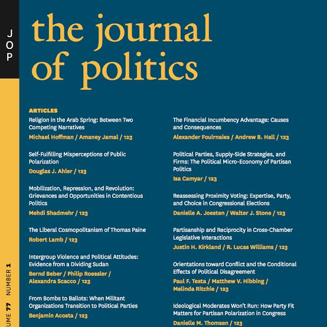
《政治学期刊》（The Journal of Politics）是创刊于1939年的政治学领域综合期刊，由芝加哥大学出版社代表南方政治科学协会出版，2018年影响因子为2.487，在176种政治科学期刊中排名第36位
威权政体的忠诚-能力权衡和下属的外部选择权
The Loyalty-competence trade-off in dictatorships and outside options for subordinates
Alexei V. Zakharov
内容提要
威权统治者并不是只凭自己一个人来统治，他必须依靠统治团队来维系他的政治生命以及执行一系列任务（如起草和执行经济政策等）。问题是：为什么很多时候威权统治者偏好雇佣无能的下属（incompetent subordinates）？本文建立了一个形式模型（formal model）研究这一问题。在动态博弈中，一个威权统治者的政治生命取决于他的下属的忠诚努力（loyalty effort）。下属在执行与维系威权统治者政治生命无关的任务（如提供公共物品）的能力上差别很大，而且威权统治者对这些任务的重视程度也有差别。如果一个威权统治者被推翻，他的下属失去了职位但是可能会被威权统治者的继任继续雇佣。本文的结论是存在一个忠诚- 能力的权衡。具体而言，第一，有能力的下属会期待威权统治者潜在的继任者对他的服务的需求，即有能力的下属会有更多的外部选择权（outside option），这就会导致与政治生命紧紧依靠现任威权统治者的无能下属相比，有能力的下属会减少维护现任威权统治者掌权的努力，而无能下属则会花更多的努力去维护现任威权统治者的统治。第二，如果来自下属能力的收益更高，有能力的下属将更有可能被雇佣。但是如果只是未来的领导者而不是现任威权统治者更重视能力，有能力的下属则可能被更忠诚的无能下属取而代之。本文对威权统治者权衡下属的能力和忠诚度的威权政治理论做出了贡献，揭示了由于有能力的下属与无能下属相比拥有外部选择权，所以会更不忠诚。
**
** 文章导读
本文作为研究威权政治忠诚-能力权衡理论的承上启下之作，对Egorov and Sonin(2011)的形式模型进行了修正，前作认为威权统治者不雇佣有能力的下属是因为其更擅于感知威权统治者的虚弱并且背叛的成本比较低。本文认为这个假定并不是必须的，忠诚- 能力权衡也可以在有能力的下属和无能下属维系威权统治者统治的成本相同时发生。本文模型给出了一个更简化的解释，即这一权衡是由模型内生的有能力的下属的外部选择权来推动的。另外，关于威权政治的形式模型，感兴趣的读者可以在阅读早期开创性的Acemoglu、Robinson、De Mesquita、Przeworski等学者研究的基础上，参考Gehlbach、Svolik、Sonin、Gandhi等学者的研究，近期的综述文献可以参考Gehlbach, S., Sonin, K., & Svolik, M. W. (2016). Formal models of nondemocratic politics. Annual Review of Political Science, 19, 565-584. 关于形式模型的教材，有兴趣的读者可以参考Gehlbach, S. (2013). Formal Models of Domestic Politics. Cambridge University Press以及其他的经济学博弈论教材。
一、模型 **** ****
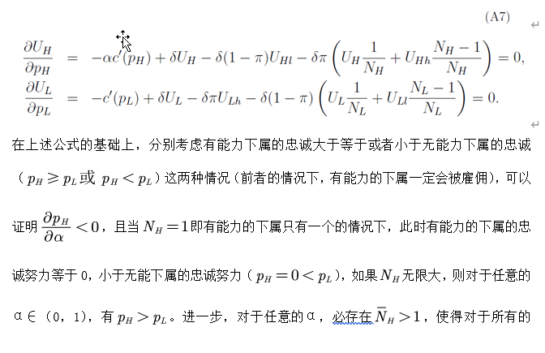 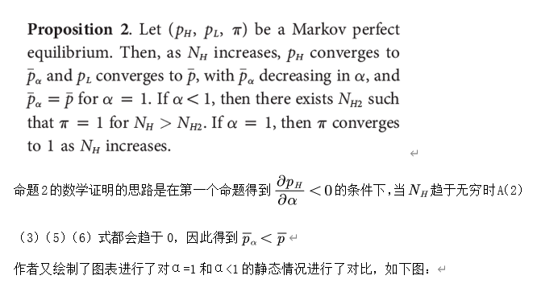 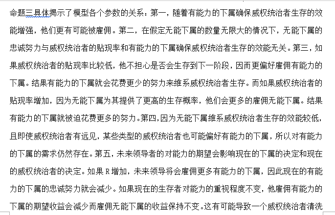
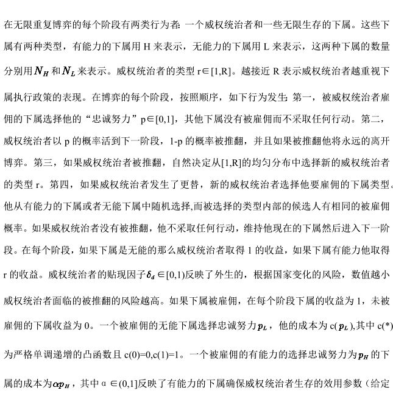
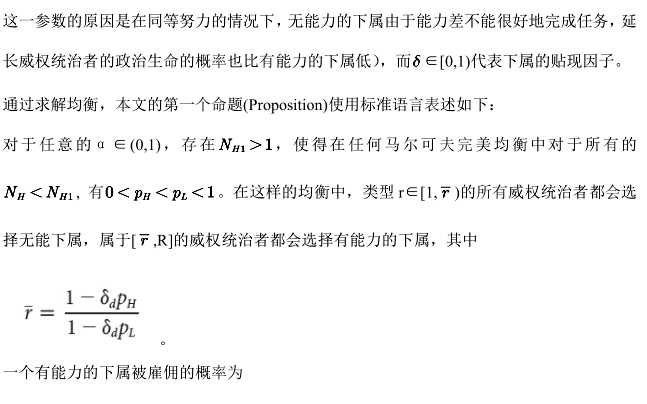
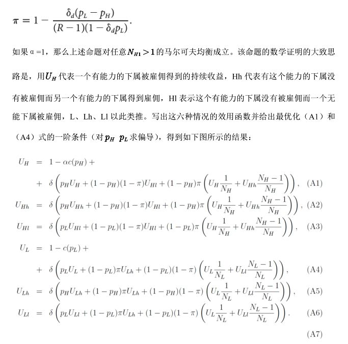
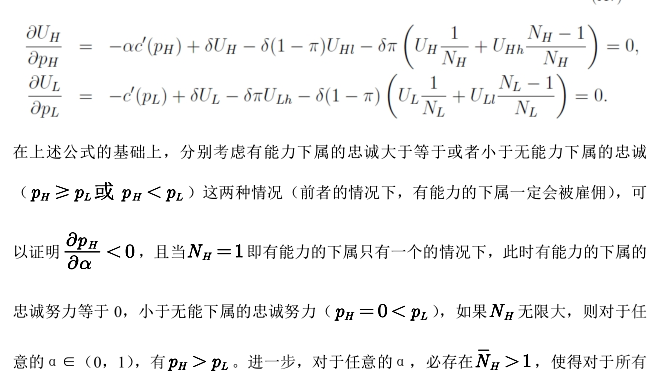
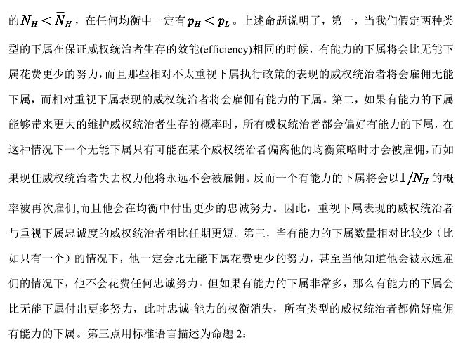
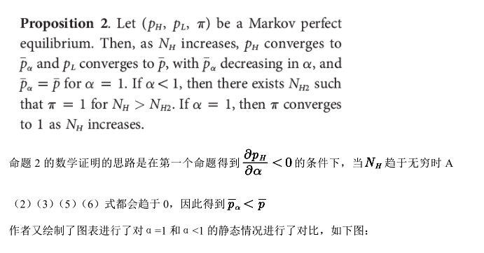
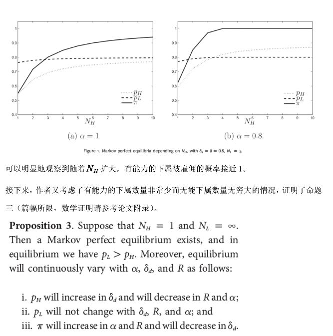
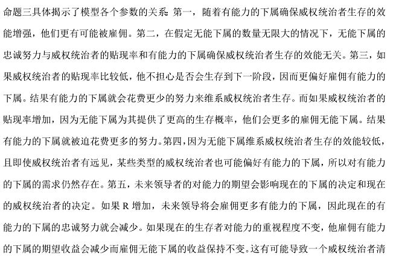
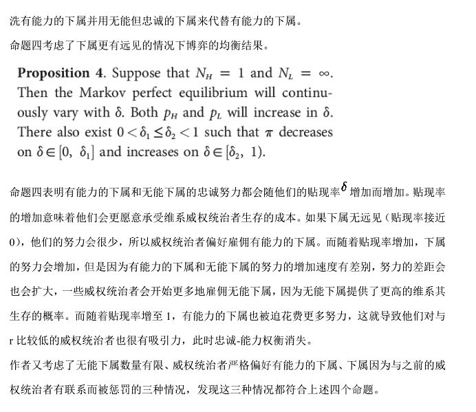
二、 结 论 ****
建立有能力的官僚团队会帮助提高威权政体的制度表现和治理水平，但这样做对威权统治者的政治生命有很大威胁。本文揭示了缺少外部选择权的无能下属会被迫花费更多努力维系威权统治者生存，而有能力的下属的政治未来并不依赖于现任独裁统治者，因此他维系威权统治者统治的努力会减少。一个典型的例子是法国资产阶级革命时期著名外交家塔列朗(Talleyrand)，他在连续六届法国政府中担任外交部长和总理大臣等高级职务。他能力很强但并不忠诚。他见风使舵，在大革命时期极力鼓吹革命但在拿破仑统治时期又对拿破仑极尽谄媚，尽管拿破仑非常赏识他的才能，他又接受敌国贿赂，向敌国出卖了拿破仑获取自己的利益。作者认为塔列朗的行为可以被模型解释：因为忠诚的成本非常高，如果塔列朗忠于现任统治者，他就不能获得敌国大量的贿赂。塔列朗可能是考虑到他自己是法国不可或缺的人才，因此不去选择承受忠诚的成本。而非常有能力的高级官僚很有可能因为对未来的政权的吸引力而成为现任政权的威胁，如隆美尔参与密谋推翻希特勒的政变。知道有能力的下属会威胁自己统治的威权统治者经常会选择雇佣无能下属。如沙皇尼古拉一世就非常重视下属的忠诚，尽管他知道有些下属非常腐败。作者的理论模型也与其他的实证研究（如威权统治者任期长度和经济表现负相关的研究）相吻合。
_ ** _ ** _ ** _ 本文由国政学人独家编译推荐**__
扫下方二维码查看往期精彩
【战略研究】节点防御：美国在欧洲与东亚地区联盟体系的结构变化丨国政学人 第277期
【方法论衡】亚历山大·温特：国际关系中的建构关系与因果关系丨国政学人 第283期
【中美关系】江忆恩：秩序世界下的中国：反思中国国际关系中的合规与挑战丨国政学人 第284期
【新刊速递】第09期| International Relations of Asia-Pacific Vol.19,No.3
【新刊速递】第10期 | International Studies Review, Volume.21, No.3, 2019
【新刊速递】第11期|Cooperation and Conflict, Vol. 54, No. 4, 2019
分类导览 1
分类导览 2

点“在看”给我一朵小黄花